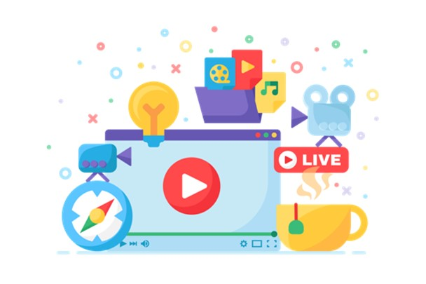
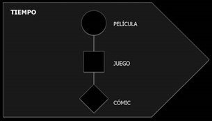
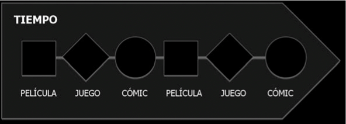
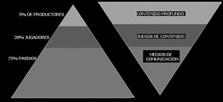
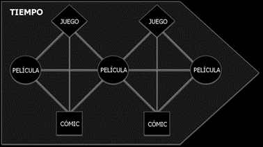

Con este recurso conocerán qué es un contenido multimedia y sus tipos de narrativa multiplataforma.

Siguiendo a Feldman (1994) podemos considerar multimedia toda aquella narración integrada, carente de fisuras, de diferentes tipos de datos texto, imágenes, sonido, audio- visual en un único entorno digital de información. De este modo se pueden establecer dos perspectivas diferentes del concepto multimedia: la del mensaje y la del canal o, en términos de Salaverría (2001, Pag. 385), el plano de los lengua- jes (o comunicativo) y el plano de los medios (o instrumental).
Desde la perspectiva comunicativa cuando nos referimos al multimedia lo hacemos de una serie de relatos transmitidos o percibidos como uno solo a través de múltiples medios. En este sentido la clave, siguiendo a Salaverria (2011, pág. 388), no está́ tanto en la yuxtaposición de medios y lenguajes sino en la integración de sus códigos en un mensaje unitario. La progresiva implantación de soportes digitales ha propiciado la aparición de un modelo narrativo diferente que se caracteriza por una mayor participación del receptor en la construcción de la historia (Orihuela y García Iriarte, 1997). Esta posibilidad de intervención del lector/espectador en la creación de los mensajes afecta de forma radical a los tres elementos considerados esenciales en la narrativa (Orihuela, 1997). Frente al narrador entendido como guía de acceso a una historia cerrada, la narrativa interactiva cuenta con unos contenidos abiertos cuya estructuración va depender de la navegación del usuario. Esta navegación constituye un nuevo modo de enunciación.
Para Rausell (2005) el relato interactivo es aquel que estructura la información en lexías interconectadas por medio de links. Esta estructura permite múltiples formas de acceso, así́ como itinerarios de lectura para lo que requiere la participación del usuario. A partir de esta narración multilínea o multisecuencial cada individuo construye su propia experiencia del relato. De este modo, cuando hablamos de narrativa interactiva nos referimos a la segmentación del relato para permitir la alteración de los hechos narrados con la selección de itinerarios concretos en aquellos momentos en los que la trama se bifurque. Unos momentos de suspensión narrativa en los que el lector/espectador debe hacer su propia selección aún dentro de las posibilidades que le ofrece el autor.
Narrativas multiplataforma
La era de la convergencia ha alumbrado el nacimiento de nuevas narrativas audiovisuales que se desarrollan a través de diversos medios y plataformas. En este contexto ha tenido lugar la aparición de nuevas narrativas audiovisuales que se desarrollan a través de diversos medios y plataformas. Estos relatos deben apelar a la actividad de un espectador que debe cambiar de plataformas para seguir el desarrollo de la acción y/o la evolución de los personajes (Eiras, 2011).
La creación de estos productos multimedia suele responder a intereses económicos, con la finalidad de rentabilizar el éxito de un contenido concreto, pero también ofrecen una narración enriquecida y ofrece a los públicos una experiencia más amplia (Belsunces, 2011, pág. 23). En el abordaje de estas nuevas narrativas audiovisuales, en las que intervienen diversos medios, trataremos de definir algunos de los conceptos clave. Siguiendo a Scolari, para referirse a las nuevas narrativas surgidas a raíz de la convergencia mediática se han utilizado múltiples términos como «crossmedia, multiple platforms, hybrid media, intertextual commodity, transmedial worlds, transmedial interactions, multimodality y overflow» (2009, pág. 189).
Entre la diversidad de expresiones que se refieren a este fenómeno se van a destacar la narración multiplataforma, crossmedia y transmedia. Tres modalidades de relato audiovisual multimedia cuyos elementos comunes hacen precisa su distinción a través de una aproximación conceptual. El relato multiplataforma es, probablemente, la forma más básica de narrativa multimedia. Consiste en la narración de la misma historia en diferentes medios o soportes, adoptándose a lo que Bálazs (1978) denominó el lenguaje forma de cada uno de ellos. Desde esta perspectiva el concepto multiplataforma puede vincularse, en mayor o menor medida, al de adaptación.
Esquema 1. Producto multiplataforma.

Fuente: Costa, C. Piñeiro Otero, T., 2014
Asimismo, cuando hablamos de multiplataforma nos podemos referir también a la creación de contenidos para su distribución a través de diferentes tipologías de dispositivos móviles (Guerrero, 2011). Respecto a la narración de un mismo relato a través de diferentes medios, el desarrollo de proyectos multiplataforma no es algo nuevo, sino que ha vivido una importante eclosión gracias al desarrollo tecnológico y el proceso de convergencia mediática. Podríamos citar numerosos ejemplos de narración multiplataforma, especialmente si tenemos en cuenta el relevante número de novelas llevadas al cine y cuyo éxito ha propiciado la creación de productos similares en otros soportes. Es el caso, por ejemplo, de la saga Harry Potter, que cuenta con películas y videojuegos; y de Crepúsculo que, además, de películas y videojuego ha saltado al comic, etc.
Crossmedia
Al igual que sucedía con «multimedia» el término crossmedia se puede utilizar para referirse a múltiples realidades. Hannele et al. (2004, 19) recogen diversas acepciones de este término como «create once, plublish anywhere», «ability to leverage content over a variety of media» o «creation and implementation of single graphics for a variety of media». En el ámbito concreto de la narración, referirnos al crossmedia storytelling es hacerlo de una narración integrada que se desarrolla a través de diversos medios, con diversos autores y estilos, que los receptores deberán consumir para poder experimentar el relato completo (Davidson et al., 2010, pág. 7).
Esquema 2. Producto crossmedia.

De este modo la narración crossmedia constituye una red tejida por una serie de elementos en torno a un universo narrativo; dichos elementos deben formar un canon coherente en sus múltiples manifestaciones (Roig, 2009). Crossmedia refers to integrated experiences across multiple media including the Internet, video and film, broadcast and cable TV, mobile devices, DVD, print, and radio. The new media aspect of the ‘crossmedia experience’ typically involves some high level of audience interactivity. In other words, it’s an experience (often a story of sorts) that we ‘read’ by watching movies, dipping into a novel, playing a game, riding a ride, etc. And this experience is connected across the various media involved through the story and the audience interactivity (Davidson et al. 2010, pág. 8).
Precisamente De Haas (2002) afirma que el papel que asumen los receptores en un relato crossmedia constituye un elemento que está en la esencia misma de su definición. El público asume una parte activa en la experiencia crossmedia de modo que es preciso que el relato sea lo suficientemente atractivo para que los usuarios completen la experiencia. Un relato crossmedia debe movilizar a la audiencia para que abandone su pasividad convencional y se convierta en usuarios activos, jugadores e incluso que den un paso más y colaboren en la construcción de la historia.
Gráfico 1. Niveles de implicación de los usuarios.

Fuente: Costa, C. Piñeiro Otero, T., 2014
Otro elemento implicito en toda narrativa crossmedia, que guarda relación con el anterior, es la necesidad de movimiento entre canales o medios. Dena considera que el salto a través de canales y medios debe señalarse como uno de los aspectos esenciales de cualquier relato crossmedia (Dena 2004). En la producción de un relato crossmedia deben perseguirse dos cometidos: que el contenido suscite el interés suficiente para que los receptores efectúen el itinerario de narración a través de diferentes canales y lograr estimular la idea de que cada contenido en cada plataforma constituye un fragmento de una experiencia más amplia que deben completar en su mente (Apperley, 2004, pág. 3).
Frente a la narración multiplataforma, que implica la repetición de una misma narración a través de diversos medios, en los proyectos crossmedia cada plataforma aporta nueva información para la construcción de un relato unitario. De hecho, el receptor debe experimentar el conjunto para entender el significado de cada uno de ellos.
Transmedia
Pero, sin lugar a duda, han sido las narrativas transmedia las que han logrado acaparar mayor atención en el ámbito de la cultura de la convergencia. La expresión transmedia storytelling fue acuñada por Jenkins en su artículo del mismo título publicado en 2003. Siguiendo a este autor (Jenkins, 2008) el término transmedia hace referencia a una serie de relatos interrelacionados, desarrollados en múltiples plataformas, pero que guarda independencia narrativa y sentido completo. Es el usuario quién decide si limitarse al consumo de uno o varios de estos fragmentos, o si explorar el relato transmedia en su totalidad para completar la experiencia global.
Para Hernández y Grandío (2011, pág. 4), hablar de narración transmediática es hacerlo de la expansión de una misma ficción a través de diferentes medios, plataformas y soportes. Esta concepción ha constituido el núcleo central de las definiciones sobre este fenómeno, lo que ha llevado a diversos autores a referirse al transmedia y crossmedia storytelling como sinónimos (Dena, 2009). Además de la expansión de la historia a través de múltiples plataformas, en un relato transmedia cada producto debe ser suficientemente autocontenido para un consumo autónomo. Esta autonomía de los contenidos vehiculados en cada plataforma convierte a cada uno de estos productos en un punto de acceso a la experiencia (Jenkins, 2008, pág. 101).
Una narración transmedia sumerge a la audiencia en un amplio universo narrativo, con diversos puntos de entrada que permiten experimentar en parte o en su totalidad una experiencia compleja. De este modo, fragmentación narrativa y fragmentación de audiencias se muestran como dos caras de una misma moneda. Una conexión que Belsunces asocia a la tesis de nivelación de Dena atendiendo a que dichos puntos de entrada al relato transmedia permiten adaptar los contenidos para distintos públicos (Belsunces 2011, pág. 24). La posibilidad de adaptar los contenidos para diferentes públicos repercute positivamente en la rentabilidad de las narrativas transmedia, como se puede observar en los numerosos ejemplos de este tipo de proyectos narrativos con origen en un producto cinematográfico, televisivo o incluso un videojuego.
Esquema 3. Producto transmedia.

Fuente: Costa, C. Piñeiro Otero, T., 2014
Star Wars, Matrix, Lost, Zelda o Águila Roja son solo algunos ejemplos de esta tipología de proyectos que, pese a no ser concebidos como transmedia, su éxito de audiencias les llevó a expandir la historia a través de diferentes medios. Se trata de la ramificación de la historia original, en un spin off permanente, llegando a crear estructuras rizomáticas con diferentes medios, formatos y discursos. Esta expansión de la historia supone, como subrayan Guarinos, Gordillo y Ramírez (2011, pág. 579) la ruptura de las nociones de linealidad espacio temporal de relatos que, aún dotados de sentido completo, no se pueden considerar concluidos.
La aproximación llevada a cabo en torno a los tres tipos de relatos –multiplataforma, crossmedia y transmedia– revela importantes elementos de confluencia entre ambas. De hecho, a pesar de que se trata de tres narrativas multimedia, desde un plano instrumental («múltiples intermedia rios») solamente el crossmedia y el transmedia pueden considerarse multimedia desde el plano comunicativo. El desarrollo del mismo relato en diversas plataformas no resulta en un mensaje unitario, circunstancia que llevaría a calificar los productos multiplataforma como narraciones many media (Pérez Luque 1998).
Les invito a que explore todos los recursos y herramientas disponibles en este tema, serán útiles para la compresión de la temática y la elaboración de las actividades evaluativas.
Costa, C. Piñeiro Otero, T. (2014). Estrategias de comunicación multimedia. Barcelona: Editorial UOC. Páginas: 102 - 110
Scolari, C. (2014). Narrativas transmedia: nuevas formas de comunicar en la era digital. Anuario AC/E de cultura digital, 1, 71-81.
Sánchez, C. C. (2013). Narrativas Transmedia Nativas: Ventajas, elementos de la planificación de un proyecto audiovisual transmedia y estudio de caso/Native Transmedia Storytelling. Historia y Comunicación social, 18, 561-574., https://revistas.ucm.es/index.php/HICS/article/download/44349/41908/0
Sanmartín, J. F. (2012). Media, crossmedia, transmedia. L'Atalante. Revista de estudios cinematográficos, (13), 34-39.
Sánchez, C. C., & Otero, T. P. (2012). Nuevas narrativas audiovisuales: multiplataforma, crossmedia y transmedia. El caso de Águila Roja (RTVE). Revista ICONO14 Revista científica de Comunicación y Tecnologías emergentes, 10(2), 102-125.
Costa, C. Piñeiro Otero, T. (2014). Estrategias de comunicación multimedia. Barcelona: Editorial UOC. Páginas: 102 - 110.
Universidad Nacional Autónoma de Honduras
Vicerrectoría Académica
Dirección del Sistema de Estudios de Posgrados
Dirección de Innovación Educativa
Entidad Desarrolladora del curso de “Comunicación Multimedia”
Dr. Armando Euceda
Director DSEP
Dra. Martha Leticia Quintanilla
Directora DIE
M.Sc. Alina Beatriz Donaire Sánchez
Expertos en contenidos
Lic. Nelsy Mariela Castro
Diseñador Instruccional
Aurora Valladares
Corrección de Estilo
Lic. Eduardo Elvir
Lic. Hugo Chinchilla
Producción Digital
Carlos José Pérez Sánchez
Programador Web